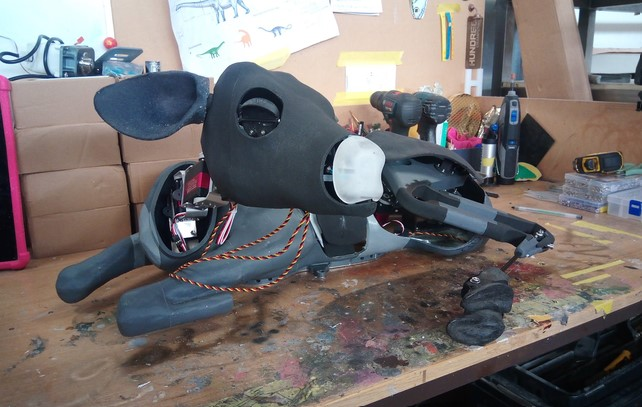
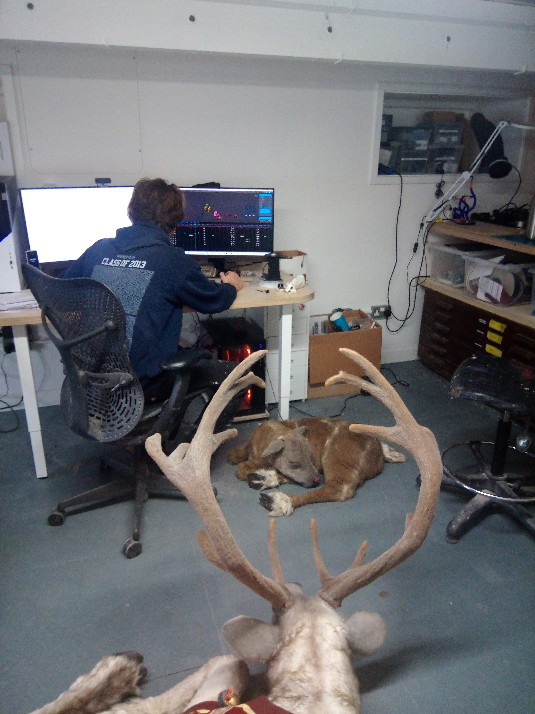

Programming, Animation, and Build

The longest stage of the project; integrating all of the seperately working components into one (actually 7), cohesively controlled reindeer.
Once built and wired, the animation could begin. But so too could the skinning. Every time a new bit of silicon or hair was added,
the animation had to be drastically changed to accomodate for the new characteristics.
Ultimately, each reindeer was given a 30 min unique animation loop. We set the reindeer up so that they could be controlled by an xbox
controller so that a professional puppeteer's actions could be recorded and mapped to interpolated keyframes. The animations played with
each other so that some movements caused reactions in other reindeer.
We used the Bottango annimation software.


This is Aaron animating Rudi, the small one.
 And me, programming a big one.
And me, programming a big one.